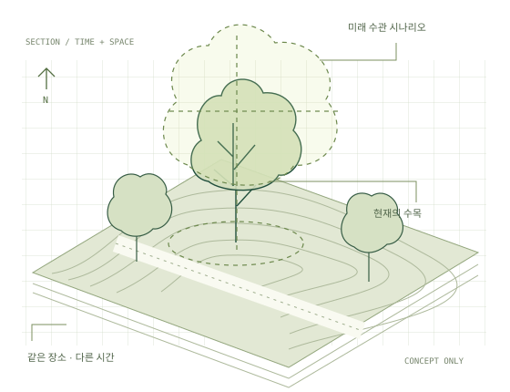

LANDSCAPE × AUGMENTED REALITY / 2026
아직 자라지 않은
풍경을, 지금 여기.
증강현실과 조경
겹쳐 보이는 기술에서, 변해가는 경관으로.
AR의 개념과 원리, 조경의 현장과 식생을 하나의 읽기 흐름으로 엮었습니다.

START HERE
어디서부터 읽을까요?
FROM RESEARCH TO PRACTICE
가능한 것과
입증된 것을 구분합니다.
공식 기능, 연구 시연, 현장 적용, 운영 성과는 서로 다른 근거입니다. 원고의 단정적인 표현을 다듬고, 생장·계절과 야외 깊이 표현을 공식 자료로 보완했습니다.
사례와 근거 읽기 ↗THE READING COLLECTION
여섯 부로 읽는 전체 목차
원래의 33개 장 번호를 유지했습니다. 본문 29개 장을 수록하고, 미집필 2·3·7·8장은 ‘집필 예정’으로 표시했습니다.
PART 01
개념과 역사
겹침의 역사에서 AR의 정의까지
PART 02
사람의 시각
깊이·초점·지각의 조건
PART 03
작동 원리
좌표·센서·추적·렌더링·입력
- 09빛을 눈에 넣는 법광학 시스루와 비디오 시스루의 차이를 밝기·시야·가림의 관점에서 비교합니다. ↗
- 10좌표와 자세 — 맞춘다는 것의 수학모델·카메라·현장의 좌표계를 연결하고 자세와 보정의 의미를 이해합니다. ↗
- 11기계가 세상을 느끼는 법IMU·카메라·깊이 센서·GNSS가 맡는 역할과 각 센서의 한계를 살핍니다. ↗
- 12트래킹과 정합마커에서 SLAM·VIO·VPS까지, 추적과 공간 정합이 해결하는 문제를 구분합니다. ↗
- 1320밀리초의 벽지연을 각도 오차로 해석하고, 움직임 속도에 따라 체감 오차가 달라지는 이유를 봅니다. ↗
- 14눈이 보는 곳에만 힘을 쏟다시선에 따라 계산을 배분하는 렌더링과 초점·가림 처리의 문제를 연결합니다. ↗
- 15어떻게 조작하는가시선·손·음성 입력이 선택과 확정을 나누는 방식, 현장 조작의 부담을 살핍니다. ↗
PART 04
분야별 전개
군사에서 교육·문화유산까지
- 16군사 — 가장 먼저, 가장 오래군사 분야의 오랜 수요를 통해 시야 안에 정보를 놓는 목적과 비용을 읽습니다. ↗
- 17의료 — 밀리미터가 요구되는 곳정밀도가 중요한 의료 사례를 통해 위치 오차와 검증의 의미를 비교합니다. ↗
- 18제조 — 이름이 태어난 곳, 그 뒤제조 현장에서 작업 지시·검사·원격 지원이 채택되거나 중단된 조건을 봅니다. ↗
- 19교육 — 효과는 있는데 얼마나교육 효과를 읽을 때 비교 조건·표본·측정 과제가 왜 중요한지 살핍니다. ↗
- 20소비자 — 한 번의 성공과 여러 실패소비자 시장의 성공과 실패에서 기술 성능 외에 서비스와 비용의 역할을 읽습니다. ↗
- 21문화유산과 건축 — 야외로 나가다문화유산과 건축 사례를 통해 실내 기술을 야외로 옮길 때 달라지는 조건을 봅니다. ↗
PART 05
플랫폼과 사회
AI·표준·프라이버시·기기
PART 06
조경과 증강현실
실무·지형·참여·식생의 질문
- 26조경 실무의 공개 기록과 도입 간극8개 사무소의 공개 기록을 바탕으로, 조사에서 확인한 것과 확인하지 못한 것을 구분합니다. ↗
- 27손으로 만지는 지형AR Sandbox·Tangible Landscape·CityScope 등 실물 모형과 계산을 연결하는 방식을 봅니다. ↗
- 28야외 경관을 다룬 연구들야외 경관 연구의 목표·정합 방식·평가 조건을 비교하고 실무 전환의 과제를 찾습니다. ↗
- 29주민과 함께 보다주민이 같은 대안을 함께 보고 논의하도록 설계할 때 필요한 참여·기록 조건을 살핍니다. ↗
- 30행정은 무엇을 샀나지자체와 공공기관의 도입을 사업 목적·조달·운영의 관점에서 읽습니다. ↗
- 31접힌 것들의 목록장치·서비스·플랫폼이 바뀔 때 데이터와 프로젝트를 남기는 방법을 생각합니다. ↗
- 32한국에서 일어난 일국내 조경·도시·지하시설물 관련 기록을 구분하고 적용 범위와 근거를 살핍니다. ↗
- 33자라는 것을 어떻게 보여줄까수목의 생장·계절·바람·불확실성을 현장에 표현하기 위한 데이터와 검증 과제를 정리합니다. ↗
KEEP & READ
자료 내려받기
PDF와 원본 합본은 옵시디언의 보존본입니다. 웹판의 수정·보완 내용은 편집 기록과 웹판 합본에서 확인하세요.